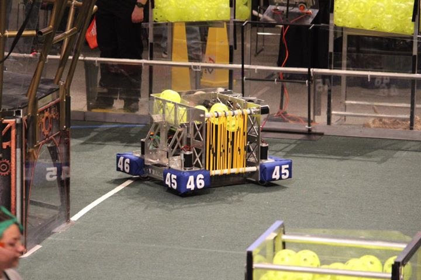
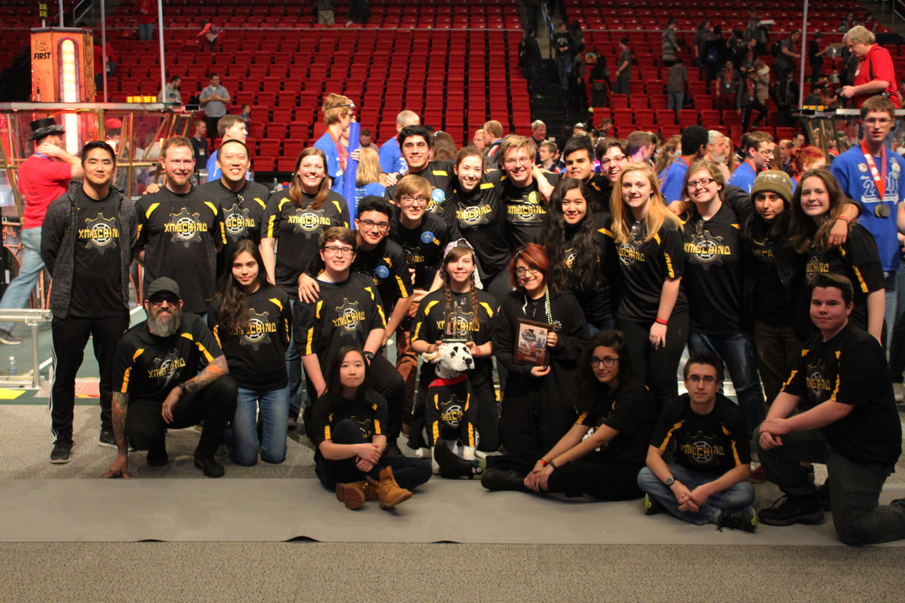
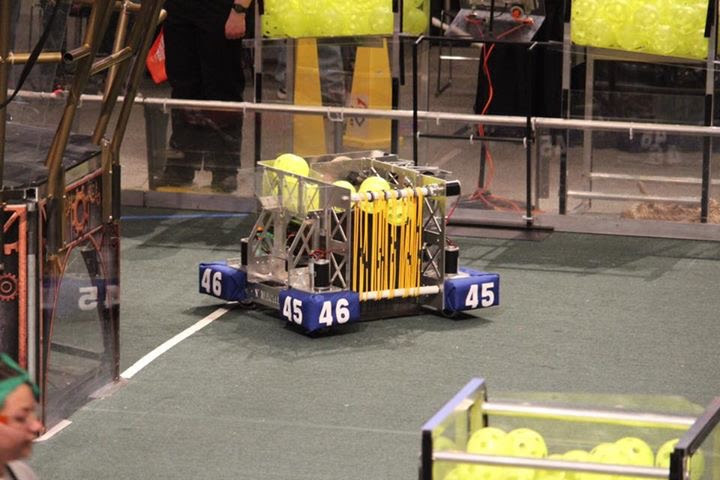
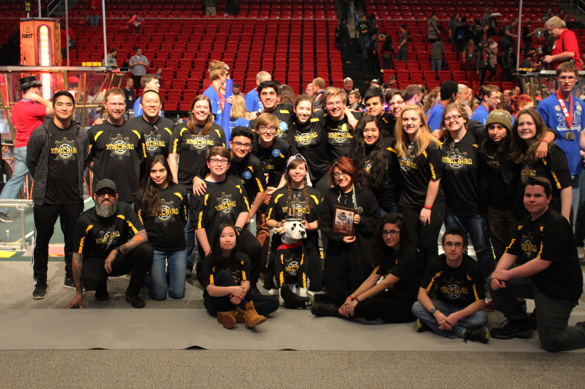

This is my junior varsity robotics team, Wired Women. We are made up of eight girls and are currently working on building a robot to compete in this year's FTC competition, where we will compete against other high schools throughout the city. Our team has a very strong bond and we're all very close friends. The second image is our FTC robot from last year, where we competed in the suburbs and we even made it past the elimination rounds. Our team has learned a lot since last year and believes it can create a much better bot this year. Lane Tech has four other FTC teams, and we all create robots to compete in the same competitions.
  
 
FRC robotics competes at Bradley University in Peoria, Illinois. We stay there overnight for three days and we also compete at the UIC pavilion here in Chicago. The first images shows the game area at UIC. The second image is a picture of our FRC robot that we built in 6 weeks. The robot is able to pick up balls, shoot them, hang gear on rod, and climb a rope. The third image is a picture of our FRC team. Our mentors and coaches include mr. Durham, mr. Law, ms. Smit, mr. Solin, and mr. Kim.